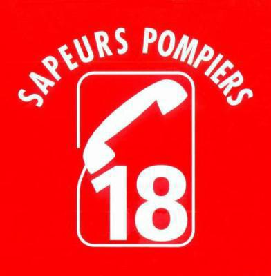
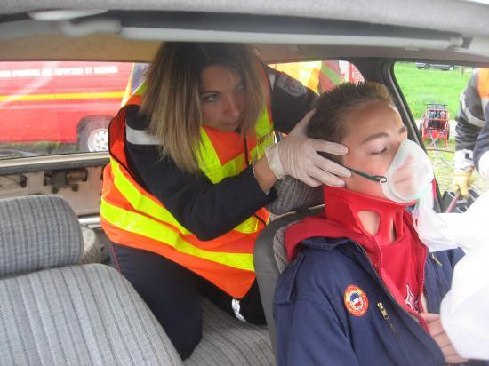

How to react ?! , c'est un site, qui donne des conseils sur ce qu'il faut faire en cas d'accident de la route. How to react ?! , c'est un site qui va aider les personnes confrontées à un accident à réagir comme il faut et faire les bonnes choses. En tant que sapeur-pompier, Corentin nous raconte qu'il est intervenu sur des accidents, ou malheureusement, les témoins ne savaient pas comment réagir, et ne réagissaient pas, ou réagissaient mal.
On se doute bien, que lors d'un accident, les témoins ne vont pas se ruer sur leurs téléphones pour regarder sur internet ce qu'il faut faire, How to react ?! est donc un moyen de prévention, afin de former les gens aux réactions à avoir en cas d'accident.
Comment réagir en cas d'accident ? qu'est-ce que je dois et ne dois pas faire ? comment ?" Plusieurs questions, auxquelles nous allons répondre.
Comment réagir en cas d’accident ? j’appelle les secours ? lesquels, il y a tellement de numéros à retenir !!!
C’est simple : P.A.S, Protéger, Alerter, Secourir
Protéger :
On protège la scène à l’aide des triangles de signalisation, 50m en amont et en aval de l’accident, on se met sur le bas-côté de la route, warning et feux de croisement allumé, et on met son gilet haute visibilité.
Alerter :

Qui appeler en cas d’un accident de la route ? Les pompiers. Pourquoi ? Car les pompiers sont les seuls à avoir les moyens de réagir
correctement à un accident de la route : matériel de désincarcération, matériels d’extinction d’incendie… Dans tous les cas, les numéros d’urgence sont interconnectés, donc si vous appelez le 18 pour un accident, l’opérateur avisera le SAMU et la Gendarmerie, qui se
déplaceront si besoin.
Que dire au téléphone ?
Un accident s’est produit, j’ai protégé la scène, j’ai appelé les secours : ils arrivent ! Sachant qu’il faut en moyenne 15 minutes entre le moment où on appelle et le moment où les secours arrivent, on a le temps de s’occuper de / des victimes, non ?
Voici les gestes de base que vous pouvez faire, afin d’améliorer ses chances de s’en sortir sans séquelles :

On vient de voir ce qu’il faut faire, nous allons maintenant voir ce qu’il ne faut (surtout) pas faire.